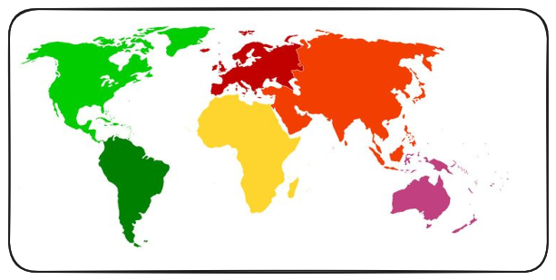
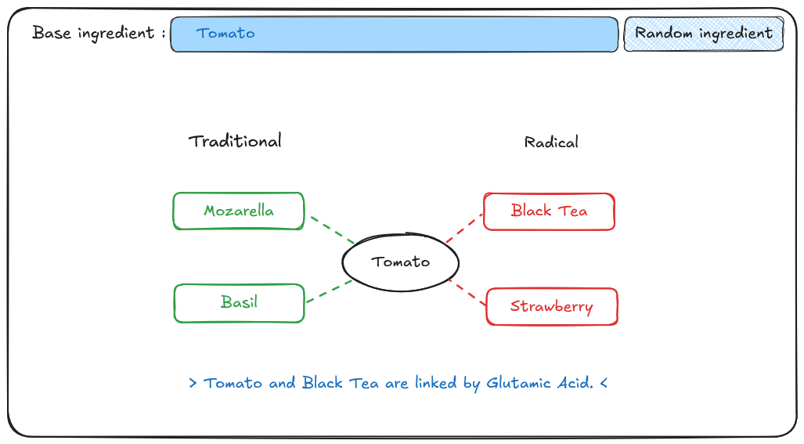

The hidden chemical compounds in food
Ingredients on the left, underlying chemical compounds on the right.
Chemistry of world cuisine
Comparing flavor pairings across global cuisines.

Pairing Oracle
Type in an ingredient and discover the best (or worst!) pairings.
